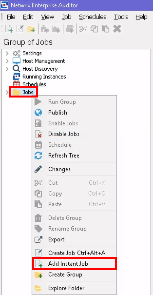
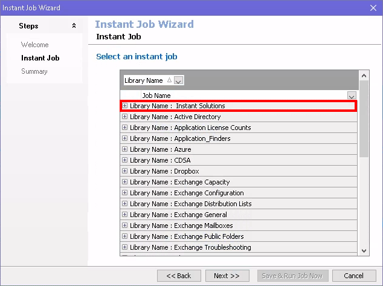
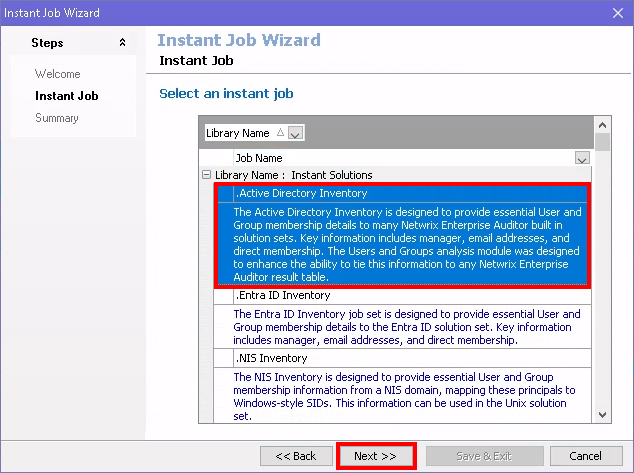
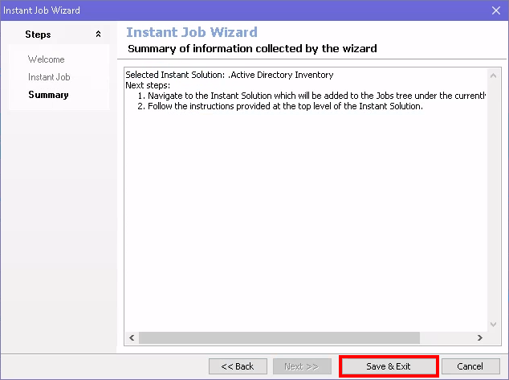
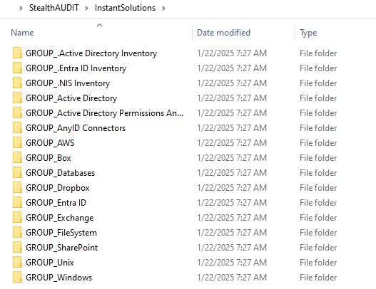

Overview
This article explains how to add jobs for a newly licensed solution to an existing Netwrix Access Analyzer installation. You can use one of the two methods described below after applying the new license file.
NOTE: For instructions on how to apply a new license key to Access Analyzer, please visit: How to Update the License Key in Access Analyzer.
Instructions
Add Solution via Instant Solutions
-
Open the Access Analyzer console, right-click the Jobs folder, and
select Add Instant Job.

-
In the Instant Job Wizard, expand Library Name: Instant Solutions by
clicking the + icon.

-
Select the newly licensed module (e.g.,
.Active Directory Inventory), then click Next.

-
On the Summary page of the Instant Job Wizard, select Save & Exit.

- Your newly licensed module should now appear in the Access Analyzer Job Tree.
Add Solution via File Explorer
-
With the Access Analyzer console closed, navigate to the
Instant Solutions folder in Netwrix Access Analyzer's installation
directory (
%SAInstallDir%InstantSolutions).

-
Locate the GROUP_ folder for the new solution and copy it to the Jobs
folder (
%SAInstallDir%Jobs).-
Example: Adding the Windows Solution
- From:
%SAInstallDir%InstantSolutions\GROUP_Windows - To:
%SAInstallDir%Jobs\GROUP_Windows
- From:
-
Example: Adding the Windows Solution
- Launch Netwrix Access Analyzer, and your newly licensed module should now appear in the Access Analyzer Job Tree.
NOTE: For further details on job configuration, see Netwrix Access Analyzer Solutions Overview.